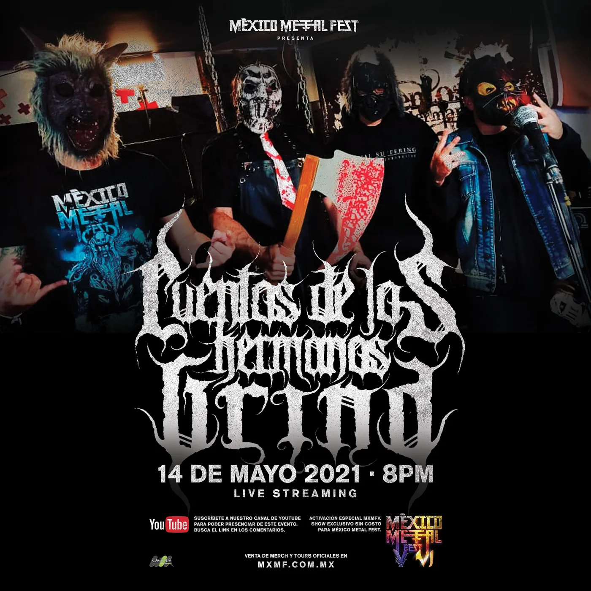
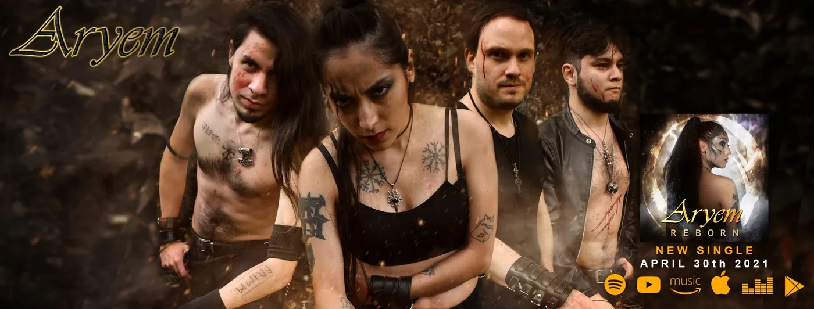
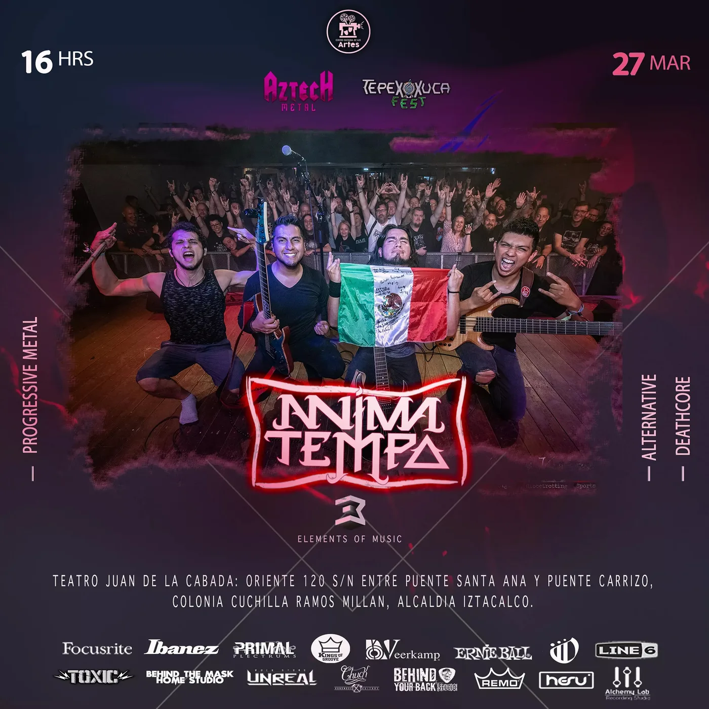
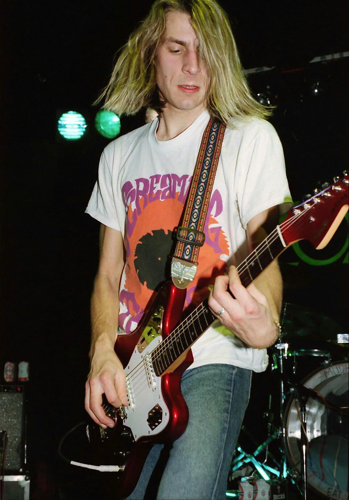
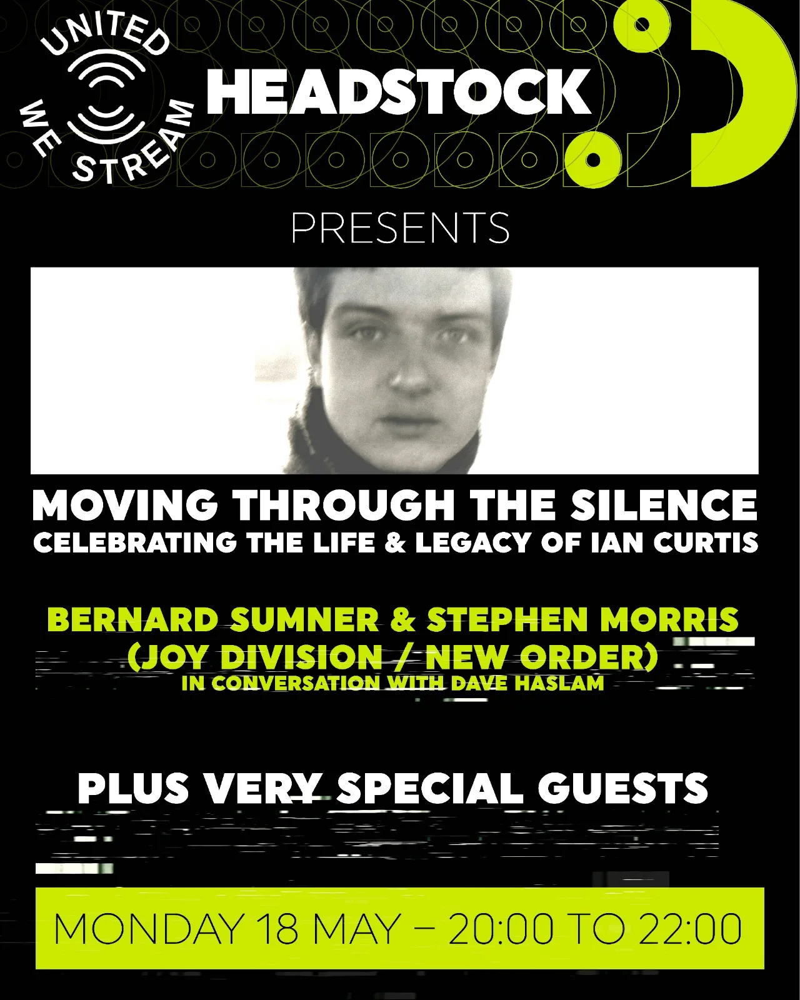
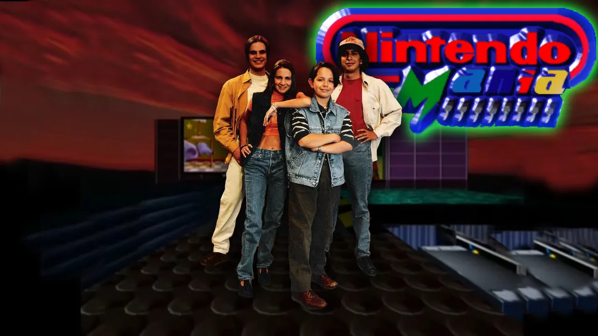
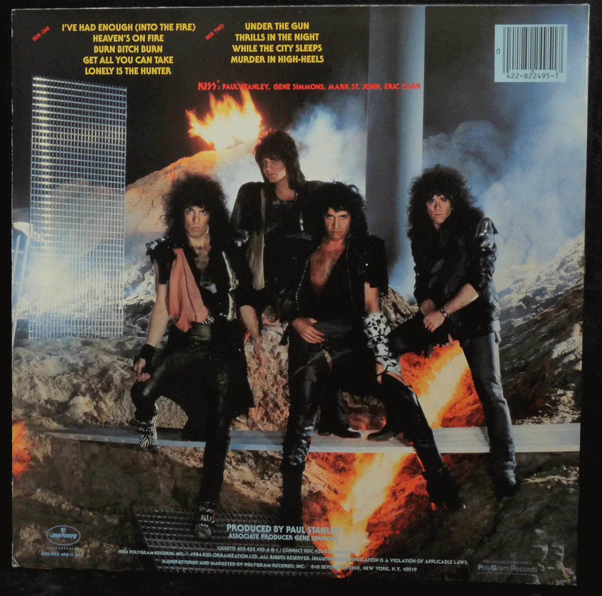
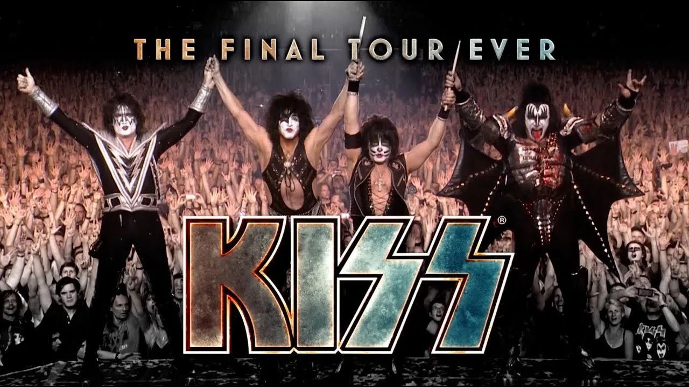
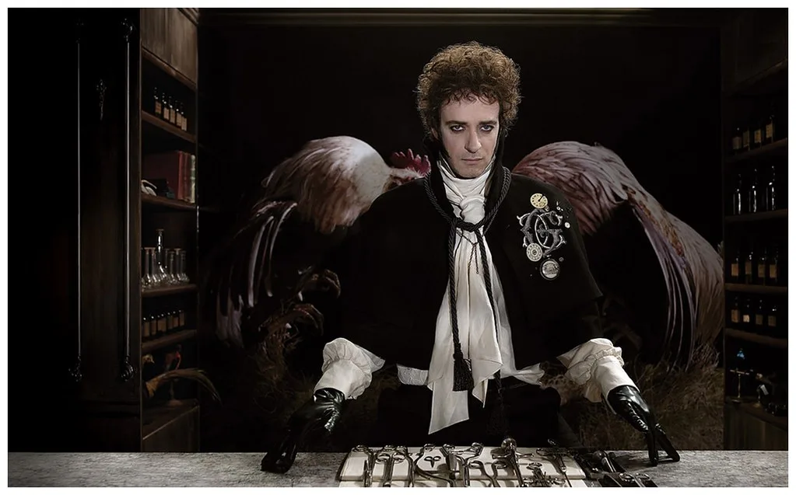

Estas 40 notas se publicaron originalmente entre enero de 2020 y agosto de 2021 en el sitio anterior. Aquí quedan recuperadas con su texto y sus imágenes originales.
2021 EL ARCHIVO · 14 NOTAS
ROCK
The Warning-Evolve.

EL PUNK MEXICANO ESTA DE LUTO
CARAVANMúsica sobre ruedas.

"FLORES MUERTAS"

CUENTOS DE LOS HERMANOS GRIND

ARYEM ROMPE SUS CADENAS CON SU NUEVO SENCILLO

INTROTYL

"Shout It Out Loud"

Morrissey parodiado en los Simpson y este les da con todo.

¿ODIAS A ALGUNA BANDA DE ROCK?

ANIMA TEMPO CELEBRA 10 AÑOS

Dead Legacy, Ignite
COVID19De rock, pérdidas, pandemias y reflexión

ELY GUERRA Y SUS AROMAS: “Una verdadera experiencia”
2020 EL ARCHIVO · 26 NOTAS

“ROMPAN TODO”: Un documental que narra la historia del rock en Latinoamérica y que nos obliga a buscar con binoculares la participación femenina en secuencia.

GRINDERMAN, el lado rabioso de Nick Cave

Hasta siempre Eddie Van Halen, 1955-2020

ROCK HECHO EN MÉXICO

Hard Rock Psicotrópico para uso recreativo, guiño guiño 😉

GRUNGE, el grito de una generación

STONER ROCK, el alma del desierto.

Ian Curtis, tan vigente después de 40 años.

Buffalo, los padres del Hard Rock Australiano

Gus Rodríguez, “estamos en contact”.

EL BATCAVE CLUB

Nirvana y el después de Kurt

Mark St. John

Nick Cave

Kiss reprograma gira latinoamericana.

Un Hombre Alado, el documental sobre Gustavo Cerati
CINELos documentales de Rock que puedes ver en Youtube para esta cuarentena

¡Felíz cumpleaños Vince Neil!
CINECINE PARA INQUIETOS
ROCKICED EARTH

Sin la gloria del Clásico

Ronnie James Dio, El hombre con la voz mágica
COMICSLlamado a la nostalgia por Bandai Namco
ANÉCDOTA ZELDAPOWER UPS DE LOS VIDEOJUEGOS

Los Tenis Panam ya tienen superpoderes.